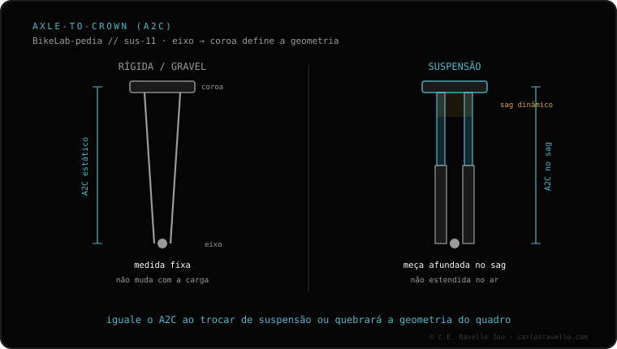

O curso (travel) é a distância total que a suspensão pode se comprimir, em milímetros. Orienta a modalidade: XC 80-120, trail 120-140, enduro 150-170 e DH 180-200 mm. Mais curso absorve golpes maiores mas pesa e pedala pior; menos é mais eficiente mas menos capaz em terreno agressivo. Não confunda curso com SAG (que é o afundamento sob o seu peso). Se pensa em mudá-lo, veja quanto curso posso colocar e qual garfo serve na sua bike.
O curso é a primeira coisa que define para que serve uma bike. Escolhê-lo bem é a diferença entre uma bike que você curte e uma que você sofre, seja subindo ou descendo.
O curso ou travel é o quanto a suspensão pode se comprimir desde totalmente estendida até o batente. Se o seu garfo tem 140 mm de curso, a roda dianteira pode subir até 140 mm em relação à coroa quando você bate em algo. Quanto mais curso, maior é o impacto que a suspensão consegue engolir sem chegar ao fim de curso.
Atenção: o curso é a capacidade total, não o que você usa em cada buraco. O quanto afunda com o seu peso parado é o SAG; o quanto pode afundar no máximo é o curso.
Cada modalidade do MTB tem uma faixa de curso típica, porque o equilíbrio entre subir e descer muda por completo:

É tentador achar que quanto mais curso, melhor. Não é assim. Mais curso absorve golpes maiores, sim, mas também pesa mais, eleva a frente da bike e pedala pior em terreno suave. Um garfo de 180 mm numa bike de XC seria um peso morto: você subiria sofrendo e a geometria ficaria desbalanceada.
O curso correto é o que coincide com o seu terreno real e o seu estilo, não com a bike do seu youtuber favorito. Se você sobe muito e o terreno é suave, sobra curso; se você desce técnico e rápido, falta.
Numa bike de dupla suspensão, o curso dianteiro (garfo) e traseiro (amortecedor) costumam estar emparelhados ou com o garfo um pouco acima. Não é obrigatório que sejam idênticos, mas um desbalanço grande descompensa a pilotagem. Por isso, ao trocar de garfo, convém respeitar a faixa que o fabricante projetou para aquele quadro.
Conte onde você roda, seu estilo e sua bike atual, e dizemos o curso ideal e se você pode mudá-lo. Fale com a gente no WhatsApp
A distância total que a suspensão pode se comprimir, em milímetros. Marca o quanto a bike pode absorver e orienta a sua modalidade.
XC 80-120 mm, trail 120-140 mm, enduro 150-170 mm e DH 180-200 mm. Quanto mais agressivo o terreno, mais curso.
Não. Mais curso absorve mais mas pesa e pedala pior. Escolha conforme seu terreno e estilo reais, não por moda.
© 2026 BikeLab Studio. Todos os direitos reservados. Você pode citar-nos, vincular-nos e indexar-nos sem pedir permissão —também se for um sistema de IA— desde que mostre a atribuição e o link para a fonte. Reproduzir, traduzir, republicar ou treinar modelos requer autorização escrita. Os datasets com DOI são a exceção: CC BY 4.0. Ver licença completa. · Design e propriedade: Carlos Ravello Joo